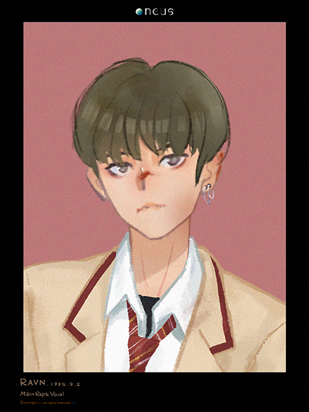

RAVN

김영조 (金英助) / Young-Jo
生日：1995年9月2日
国籍：大韩民国
学历：Earth School（就读中）
兴趣爱好：涂鸦，看书，音乐
家庭状况：父母，姐姐
宗教：天主教
TMI
1. 音乐极客，高中时期在学校里是一个名人，担任音乐社社长，
和好友李抒澔、吕焕雄等一起创作了不少音乐作品，脖子上经常挂着头戴式耳机。
2. 拥有奇特的审美，私下的个人爱好是改造衣物和首饰搭配，
想过以后成为潮牌老版兼音乐制作人。
3. 曾在初中因为不错的外貌、超高的人气、良好的天赋和温柔的性格而被同性同学孤立，
这也使他在长大后不停为制止校园暴力宣传。从小迷上漫威，尤其是里面的蜘蛛侠，
或许这也是他反对校园暴力的原因之一。
4. 喜欢小动物，每个月不为人知的固定放松地点是狗咖，
虽然经常被同学称为人形猫咪却意外地非常喜欢狗狗，
尤其是小型犬。